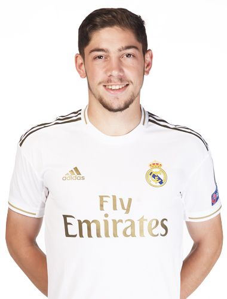
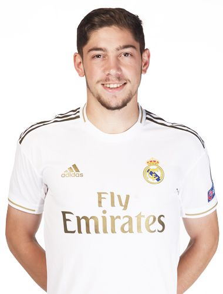
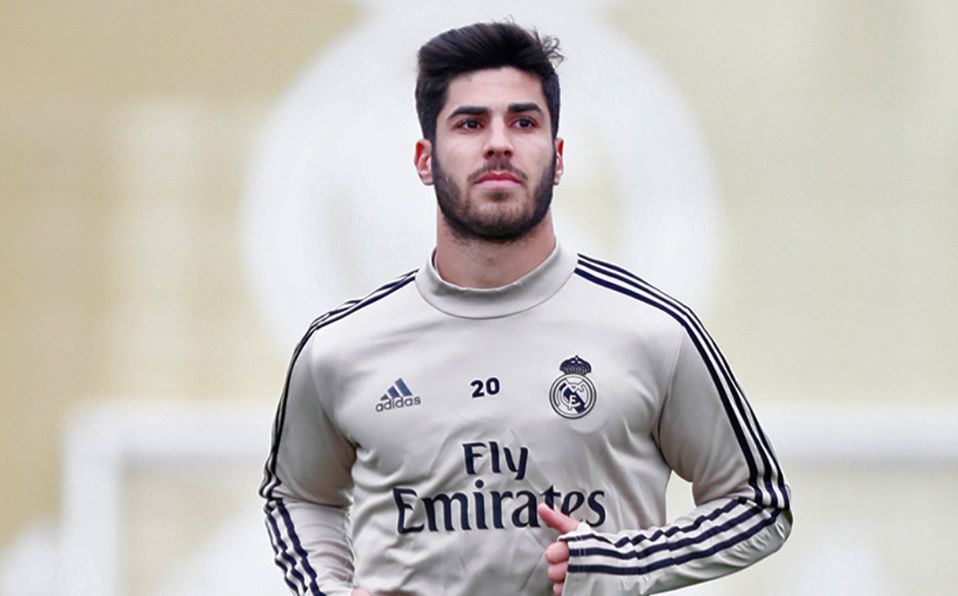
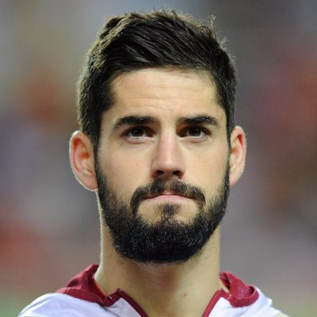

Federico Valverde
Forward
Federico Santiago Valverde Dipetta (born 22 July 1998) is a Uruguayan professional footballer who plays as a central midfielder for Spanish club Real Madrid and the Uruguay national team.

Marco Asensio
Forward
Marco Asensio Willemsen (born 21 January 1996) is a Spanish professional footballer who plays as a winger and attacking midfielder for Real Madrid and the Spain national team.

Isco
Midfielder
Francisco Román Alarcón Suárez (born 21 April 1992), commonly known as Isco ([ˈisko]), is a Spanish professional footballer who plays as an attacking midfielder for Real Madrid.